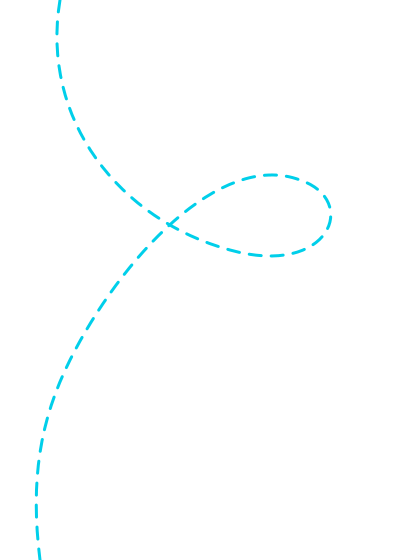
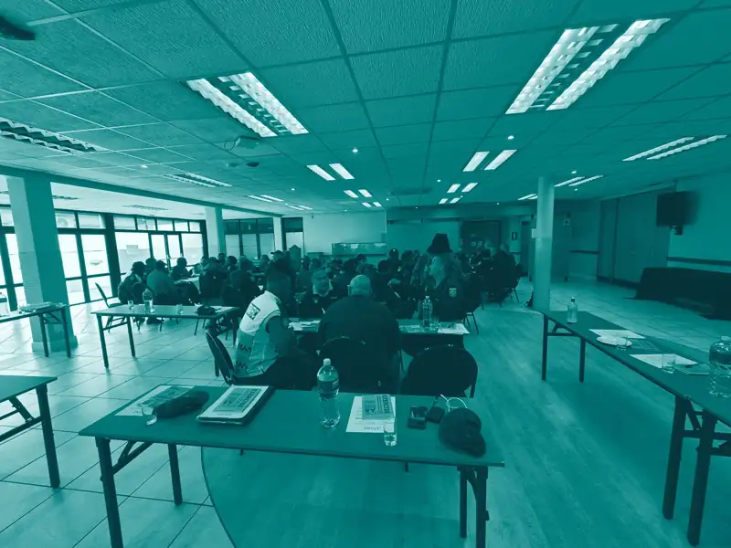
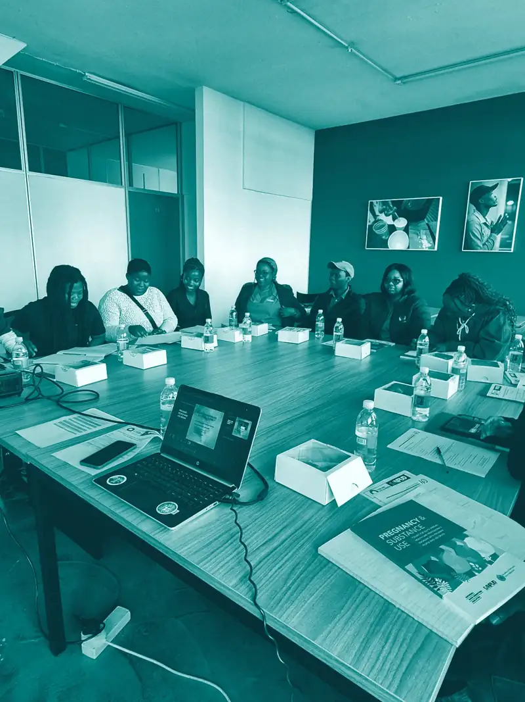
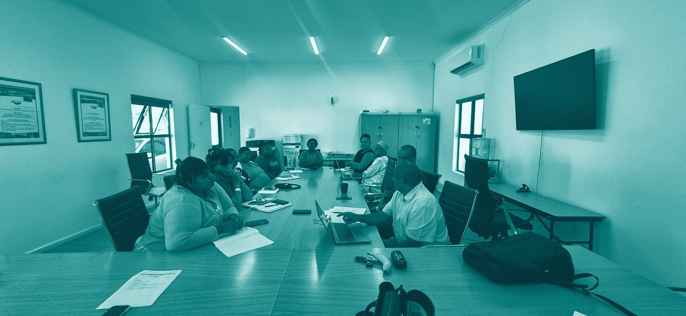
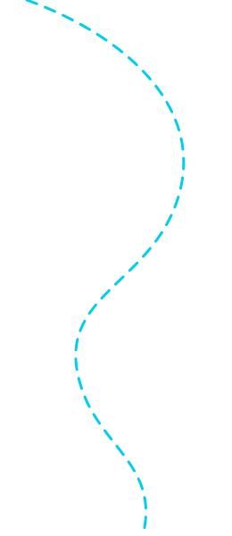
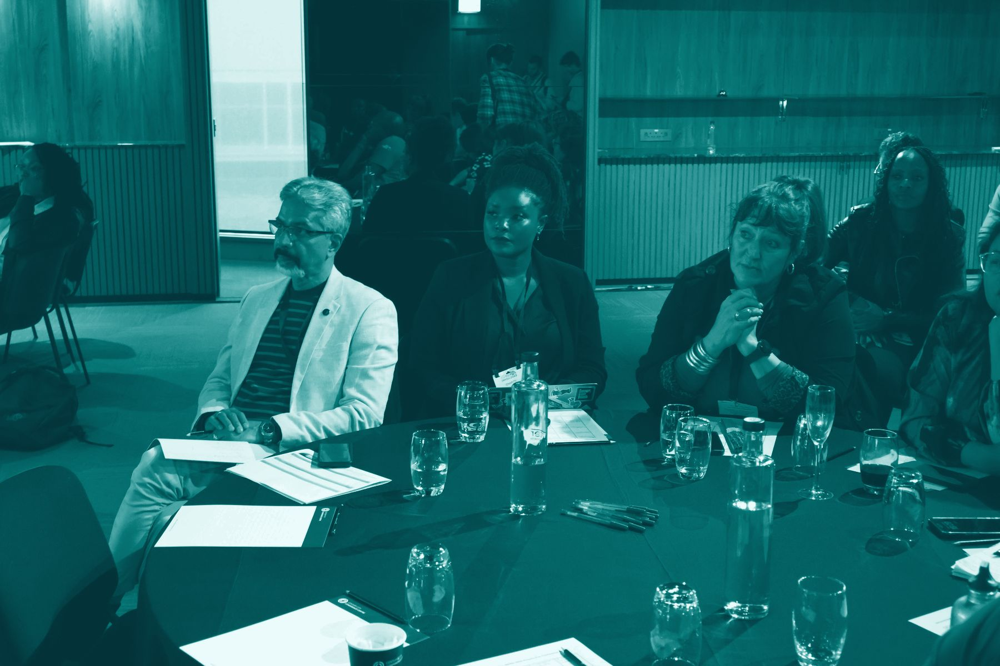
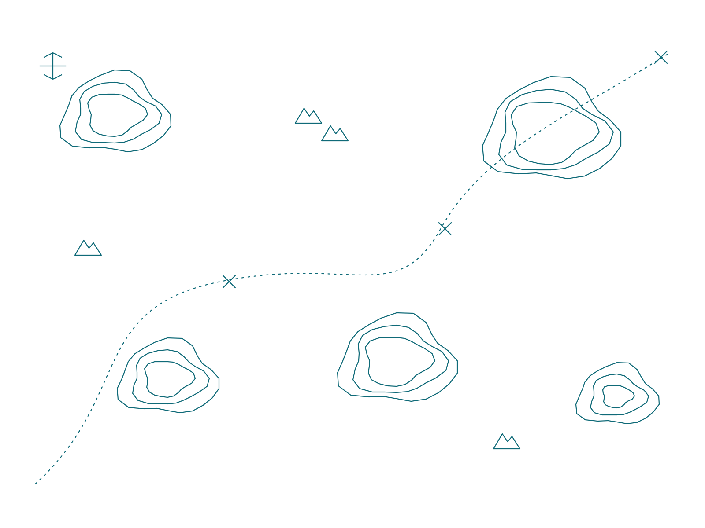
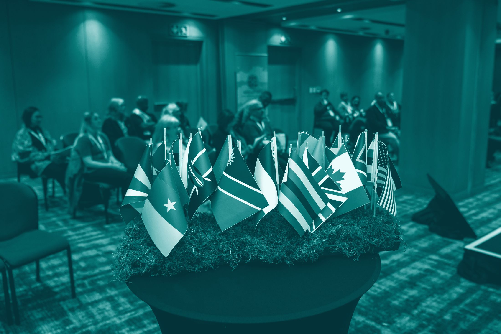
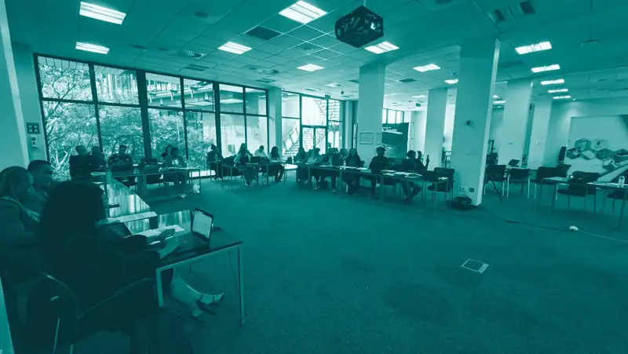

Where cases
get lost
- A report stalls between law enforcement and health
- A referral is never followed up
- A case loses the person responsible for it
- Information degrades between institutions
Gender-based violence systems rarely fail at the policy. The laws and mandates exist. Services exist on paper.

Where STAND works
Gender-based violence, substance-related harms, justice and health meet at the same point. We work across that intersection rather than in any single silo.
Survivor-centred
Strengthening legal, institutional and referral systems to respond effectively and accountably to gender-based violence.
Learn more
Rights-based
Evidence-informed public-health responses for marginalised and underserved women, and for people affected by poverty and substance use.
Learn more
Joined-up
Coordinated, multi-sector response systems: referral pathways, inter-agency coordination and district-level accountability.
Learn more
Restorative
Evidence-based frameworks, tools and institutional capacity for diversion, restorative justice and community-based alternatives.
Learn more

How we deliver
STAND scopes every engagement specifically, from short technical assignments to multi-year programme partnerships. Scope is agreed, outputs are specified, and reporting is thorough.
Our flagship follows a GBV case across every institution that touches it, so no case disappears in the handovers.
Explore the flagshipRecognition and track record


STAND (Social Transformation Action Defined) is a South African women-led nonprofit, founded in 2018 and based in Cape Town. It is led by founder and CEO Stacey Doorly-Jones, whose thirty-year career spans financial services, corporate change, public health and institutional reform. A Board chaired by Charity Monareng provides independent, expert-led oversight. Lean and senior-led, we bring the rigour of a senior partner with the agility of a specialist team.
What we stand by
We say what we can support
and support what we say

We track what we commit to
and report honestly on what we achieve

The people we serve stay visible and respected
no pity language | no saviour framing

Technical quality is non-negotiable
done | positioned to do | proposed


Since 2018, STAND has trained more than 500 officials, practitioners and caregivers, and reached more than 700 women, young people and community members directly.
Our live pilot in the Overstrand, supported by the DG Murray Trust. It went live on 24 August 2026 and dispatched its first case to law enforcement three days later.
Learn moreBreaking Point, on the impact of US funding cuts on harm reduction in South Africa, and three Divest/Invest country studies for Harm Reduction International.
Learn moreA rights-based clinical toolkit, developed with SANPUD and backed by the Elton John AIDS Foundation, now endorsed for public-sector primary and maternity care.
Learn more
STAND is lean and senior-led by design. Your support pays for the people and systems that deliver the work. All giving is Section 18A tax-deductible.



Between what is evident and what is acted on, systems fail. Track Her Case is live in the Overstrand and ready to scale across the Global South. Phase 2 is ready to fund.

We would welcome the conversation.
If you are a grantmaker, funder, government partner or civil society organisation looking for a technically credible implementation partner, get in touch.
We respond to all substantive enquiries within five working days.